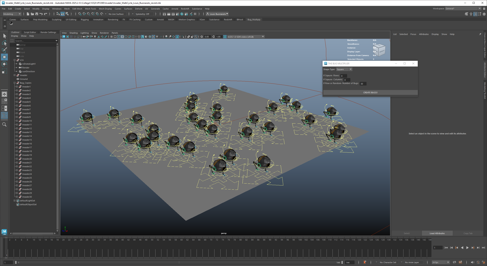

This project was a part of an independent study course during the spring quarter of 2024. The professor sponsoring my independent study was teaching another course with the goal of the students creating a short film. Their film involved swarms of bug-like robots that were invading Chicago. My professor and I decided a good project would be to learn how to use Python in Maya. Since the artists needed the ability to create swarms, I wrote a script that utilized the Maya library and instanced their objects. I added additional features as we went on that allowed for determined shapes or random placements in a specified area. The last piece of this project was figuring out a region of the bug so that another instanced bug wasn't created in the same area. I focused on working with the artists in the class to meet their needs and build the tool to be as user-friendly as possible.
The main challenge of this project was retaining all the attributes of the bugs being instanced. For simplicity's sake, I ended up retaining all attributes of the original object. I went in this route as none of the artists needed to offset animations or anything of that nature. If that wasn't the case, I would have added a feature to input offset options, either by position or animation timing to create differences in the instanced objects. This is something I am looking to work on at a later point.
I focused on making this plugin tool simple for the artist to use. Once stored on the Maya shelf, all the artist would need to do is select their object in the outliner, click the tool icon, and input their options for the instancing. I added error handling for cases when an object wasn't selected or if there was just a general error. This gave the artists a streamlined experience where they didn't need to worry about any complicated steps.
This was my first time utilizing my programming skills in a creative application and was a great experience. The script can be found on my Github.